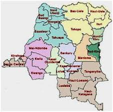

un peuple une histoire!!!
|
prenez votre temps car ici il ya le quotidien du peuple de sankuru; son histoire, ses origines ainsi que le mode de vie de la poulation Sivous voulez avoir les informations concernant la province de de Sankuru prenez votre temps car ici il ya le quotidien du peuple de Sankuru son histoire, ses origines ainsi que le mode de vie de la poulation Sivous voulez avoir les informations concernant la province de de Sankuru prenez votre temps car ici il ya le quotidien du peuple de Sankuru |
|
prenez votre temps car ici il ya le quotidien du peuple de sankuru; son histoire, ses origines ainsi que le mode de vie de la poulation Sivous voulez avoir les informations concernant la province de de Sankuru prenez votre temps car ici il ya le quotidien du peuple de Sankuru son histoire, ses origines ainsi que le mode de vie de la poulation Sivous voulez avoir les informations concernant la province de de Sankuru prenez votre temps car ici il ya le quotidien du peuple de Sankuru |
